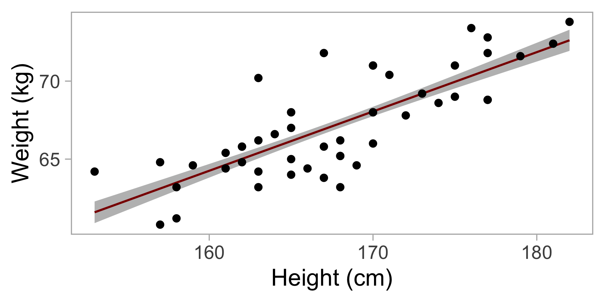

Environmental Risk
Part 2
Planetary Boundaries

Coral Bleaching

Coral Bleaching

Longterm Monitoring Data
Collected by CRIOBE since 2005
Point intercept transects
3 transects per site

Longterm Monitoring Data
Your turn!
Explore the coral_cover set:
- Which years are covered? Are there any gaps?
- How many sites?
- Same number of transects per site and year?

Bleaching event 2019

Bleaching event 2019

Bleaching event 2019 - Sites

Degree Heating Weeks
- Measure for accumulated heat stress
- Satellite derived data
- Based on Sea Surface Temperature (SST)

Calculation
Calculate difference between SST and bleaching threshold: long-term mean (MMM) + 1°C
Sum up all differences > 0 for the last 12 weeks (84 days)
Divide by 7 (=> unit is °C weeks)
Continue with next day
\[ \textrm{DHW} = \frac{1}{7}\sum_{i}^{84} BT\textrm{, where }BT \geq 1 \]
Degree Heating Weeks

Degree Heating Weeks

Degree Heating Weeks

Degree Heating Weeks

1. Change in cover
Do you see any problem?

3. Regression
Type of linear model
Tries to explain how one variable (e.g. height) influences another (e.g. weight)
Can be used to
predict e.g. weight only with height
assess importance (significant or not)

3. Regression
Finds the best fitting line through a point cloud
\[ y_i = a + b x_i + \epsilon_i \]
\(a\) is the y-intercept, \(b\) is the slope
\(y_i\) is the expected y value at \(x_i\)
The line does not fit perfectly to the data, each actual data point can vary by \(\epsilon\)

3. Regression
Residuals


4. Visualisation
The easiest way to visualize the model is by predicting data.
This also works for more complicated models
Back to the weight data set

4. Visualisation
Steps
Create a new data frame with
xvalues for which you want to predictyvalues. I usually use a sequence of 100 values between the minimum and maximumxvalue.Predict data with SE
Plot model as line, SE as ribbon, and raw data in background
Code
ndat_weight <- data.frame(height = seq(min(dat_weight$height),
max(dat_weight$height),
length = 100))
pred_weight <- predict(m_weight,
newdata = ndat_weight,
se.fit = T) %>%
bind_cols(ndat_weight) # add height to predictions
pred_weight %>%
# only height is the same in both data sets
ggplot(aes(x = height))+
# Plot SE
geom_ribbon(aes(ymin = fit - se.fit,
ymax = fit + se.fit),
fill = "grey")+
#Plot model
geom_line(aes(y = fit),
col = "darkred", linewidth = 1.2)+
# Plot raw data
geom_point(data = dat_weight,
aes(y = weight), size = 4)+
# Formatting
labs(x = "Height (cm)", y = "Weight (kg)")+
theme_light(base_size = 28)+
theme(panel.grid.major = element_blank(),
panel.grid.minor = element_blank())
4. Visualisation
Your turn!
Plot the coral cover data and model in a similar way

Thermotolerance
Many studies show that the thermotlerance differs between genera and species!